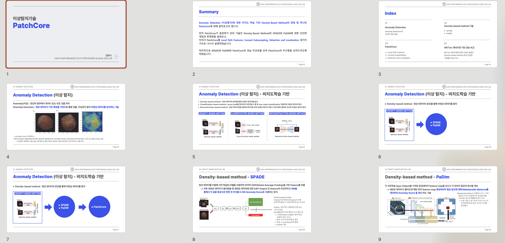
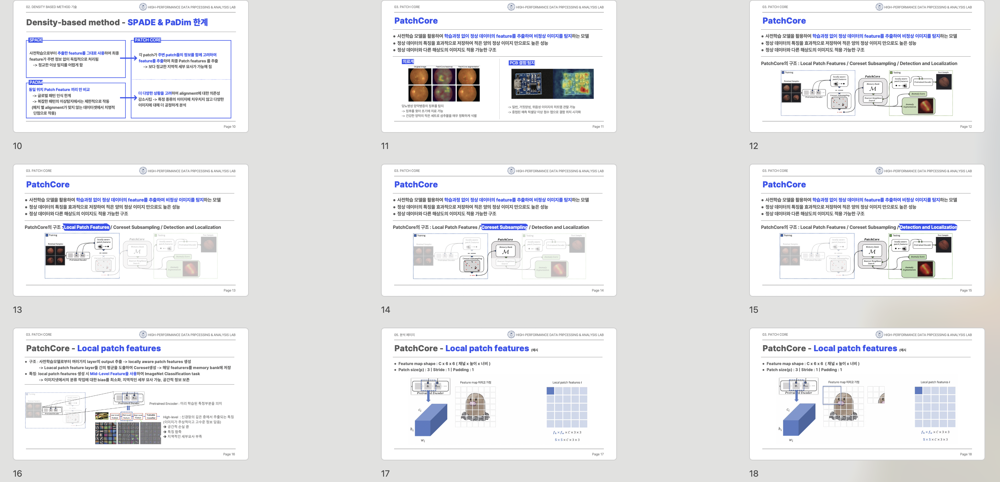
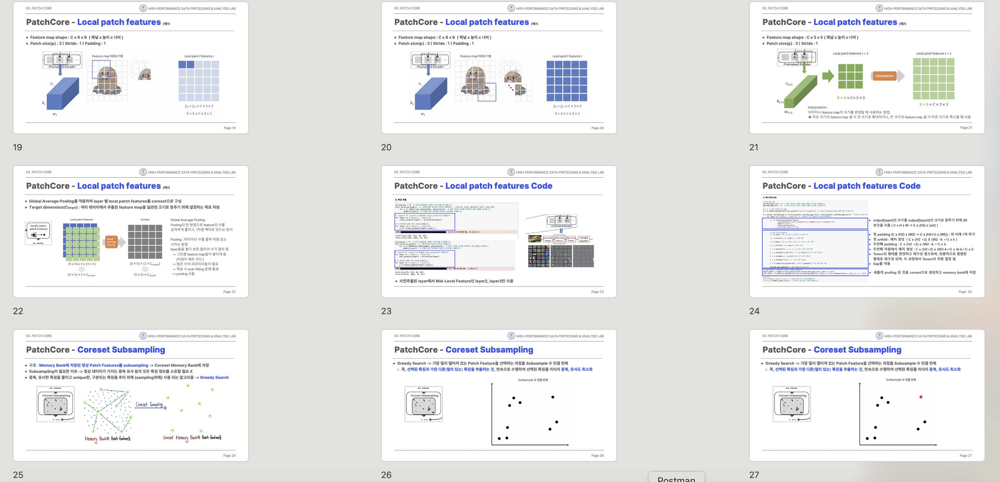
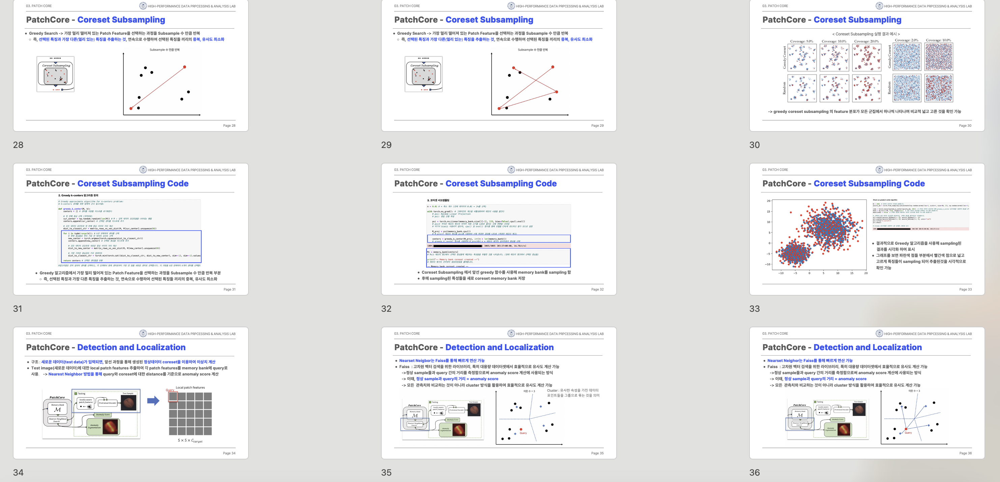
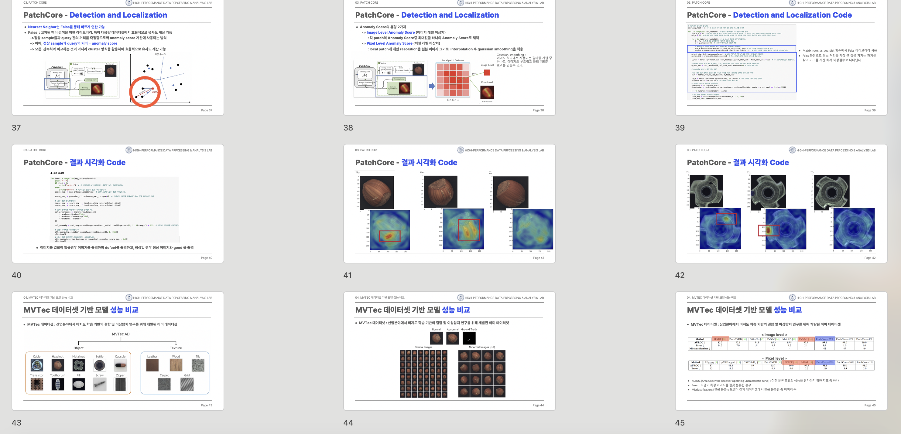

01. Project Overview
본 프로젝트는 비지도 이미지 이상탐지 분야에서 널리 활용되는 PatchCore 기법을 학습하고, 논문과 공식 구현 코드를 기반으로 전체 이상탐지 파이프라인을 직접 재현한 프로젝트입니다.
단순히 논문 내용을 요약하는 데 그치지 않고, 정상 이미지 feature를 memory bank로 구성하고, 테스트 이미지의 patch-level feature와 비교하여 anomaly score 및 anomaly map이 생성되는 과정을 코드 실행과 결과 분석을 통해 확인했습니다.
02. Motivation & Goal
Research Motivation
산업 및 비전 도메인에서 이상탐지는 라벨링 비용이 높고 이상 데이터가 부족한 경우가 많아, 정상 데이터만으로 이상을 탐지하는 비지도 접근 방식이 중요합니다.
PatchCore는 사전 학습된 백본 모델의 patch-level feature를 활용하여 정상 데이터의 feature distribution을 저장하고, 테스트 이미지가 정상 분포에서 얼마나 벗어나는지를 계산하는 방식으로 이상을 탐지합니다.
Research Goal
- PatchCore 알고리즘의 핵심 아이디어와 동작 구조 이해
- 공식 구현 코드를 기반으로 전체 파이프라인 재현
- 로컬 데이터셋 적용을 통한 anomaly score 및 anomaly map 확인
- 비지도 이미지 이상탐지 기법의 실용적 장단점 분석
03. My Role
Paper Study
PatchCore 논문의 핵심 구조를 분석하고, patch-level feature, memory bank, nearest neighbor 기반 anomaly scoring 방식을 정리했습니다.
Code Reproduction
공식 구현 코드를 기반으로 실행 환경을 구성하고, 데이터 입력부터 anomaly map 생성까지 전체 파이프라인을 직접 실행했습니다.
Experiment Analysis
모델이 생성한 anomaly score와 anomaly map을 확인하고, 정상 영역과 이상 영역이 feature distance 기반으로 어떻게 구분되는지 분석했습니다.
Presentation & Documentation
논문 구조, 알고리즘 흐름, 실험 결과를 발표 자료로 정리하고, 실습 코드 실행 과정을 영상으로 기록했습니다.
04. PatchCore Method
PatchCore는 정상 이미지에서 추출한 patch-level feature를 저장하고, 테스트 이미지의 feature가 정상 feature 공간에서 얼마나 떨어져 있는지를 기반으로 이상 여부를 판단합니다.
05. Experiment Process
본 프로젝트에서는 공식 구현 코드를 실행하고, 로컬 데이터셋에 적용하여 PatchCore의 동작을 검증했습니다. 실험은 모델 성능 개선보다 알고리즘 이해와 재현에 초점을 맞추었습니다.
Dataset
정상 이미지와 이상 이미지로 구성된 이미지 데이터셋을 활용하여 실험을 진행했습니다.
Training Data
비지도 이상탐지 구조에 따라 정상 이미지 feature만 사용하여 memory bank를 구성했습니다.
Output
테스트 이미지별 anomaly score와 pixel/patch-level anomaly map을 확인했습니다.
Focus
모델 개선보다는 PatchCore의 이상탐지 흐름과 결과 해석에 초점을 두었습니다.
06. Presentation PPT
PatchCore 논문 분석과 재현 실험 내용을 발표 자료로 정리했습니다. 발표 자료에는 알고리즘 구조, 실행 과정, anomaly map 결과 해석을 포함했습니다.





07. Code Demo Video
PatchCore 코드 실행 과정과 결과 확인 과정을 영상으로 정리했습니다.